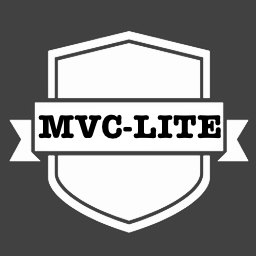

mvc-lite
A lightweight mvc framework. Just the basics.
Mvc Lite

Introduction
mvc-lite is a lightweight MVC Framework aimed at accomplishing common MVC goals in a much lighter package. The bulk of this work is inspired by the Zend Framework (http://framework.zend.com)
Usage
This library should be used to create a simple MVC application. If you need sophisticated application handling, consider a more robust framework, like Zend Framework, Laravel, or Symfony.
Quick Start
The mvc script can be used to help start an application quickly. It's usage is:
./bin/mvc setup --target=/local/path/to/appOnce created, adding an entire resources (i.e. Users) can be done like this:
./bin/mvc resource:create --target=/local/path/to/app --name=usersDocumentation
Traits
There are a list of traits available as well. This allows for simple access to commonly used classes (i.e. Request, Config, Session). Including them in your code is as simple as:
use MvcLite\Traits\Session as SessionTrait;Configuration
An application configuration file allows for easy configuration of the
application. You can modify that file at etc/app.ini
Same Code, Multiple Formats
Multiple formats are supported for each endpoint as well. Switching the Content-Type header in the response will return a corresponding output. Caveat: There is a naming scheme to views
<script-name>.<format>.phpWhere <script-name> is the name of the script being used, and <format> is the requested format. The following are the supported formats for the framework:
- html
- xml
- json
View Helpers
By default, view helpers generate bootstrap-friendly markup. We love
Bootstrap,
and we think you should too! The view helpers are overridable however. Simply
Create App\View\Helper\<HelperName> and it's render method
will be used instead.
Full Documentation
Full documentation can be found on our GitHub Pages site
API documentation can be found at Our API Documentation